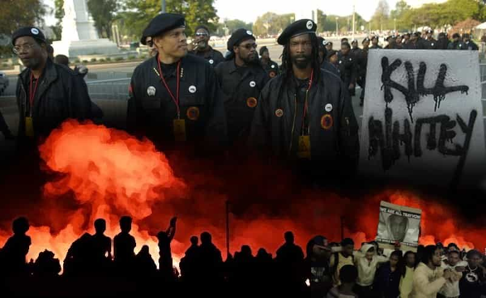

Corey is an iconoclast and the author of 'Man's Fight for Existence'. He believes that the key to life is for men to honour their primal nature. Visit his new website at primalexistence.com


Collapse is one of those things no one wants to think about because it’s both depressing and seemingly distant in the fantasy future. But given the events we’ve witnessed around the world in this year alone, is it really that implausible? History has shown us that upheavals happen suddenly and forcefully all at once after long periods of brewing; it is usually not something people expect to happen. With the way things are shaping up around the world, you wouldn’t be considered mad to think that a major disaster is lurking just ahead.
Here are some very possible scenarios in which we might experience the collapse firsthand in the near future.
The thing about the economy is that no one can really predict for sure. Every year, individuals pop out and claim that the economic collapse is imminent—only to not happen at all. You’ll find hundred of different opinions and predictions from the so-called experts, but the truth is that no one really knows what the heck is going to happen even one year from now. That said, there are increasing signs that there is trouble ahead for the global economy with estimations ranging from a mild downturn to something worse than the Great Depression. And this isn’t some conspiracy: organizations from the IMF to billionaires like Jim Rogers and Donald Trump, as well as the author of Rich Dad and more are warning of dark days ahead.
Also, every eight years after an American presidential election, a financial crisis seems to hit America. In 2000, it was the Dotcom bubble; and in 2008, it was the housing bubble. Could 2016 election be a sign that the next big bubble is about to burst? Could it be the so-called derivatives bubble? The elites are already preparing for the collapse with their doomsday bunkers. Do they know something we don’t?
Of the seven listed here, this one may be the most devastating scenario short of total nuclear annihilation. Civilizations come and go, but once the environment is destroyed, there’s probably no coming back. To be honest, I don’t know how well the ecosystem is holding up or whether man-made “climate change” is real or a hoax—I haven’t took the time go through all the data (you should be highly skeptical of anyone who claims to know for a fact). But the general impression I get is that things are getting worse with each passing day as human population continues to explode while the demand for food and natural resources are increasing at an exponential rate, causing untold devastation in the process that may not be reversible.

Are we seeing a preview of what is to come through the Syrian war?
With the way Hillary, Neocons, and the MSM are drumming for a war with Russia, you would think the elites are preparing for a major war. The geo-political situation around the globe has been unstable in the recent years with Ukraine, Iraq, Syria, Yemen, Libya, Afghanistan and more already engulfed with on-going wars. The Middle East, in particular, can blow up bigger than anyone expects as the Saudis and the Gulf states, Turkey, Iran, Russia, the US and the rest of NATO are slowly being dragged into the present conflict.
Special attention should be paid to how the West, led by the US, is setting the stage for a show-down with Russia—especially if Hillary end up getting elected. They’ve already been pressuring Russians with expansion and propaganda war for years.

The recent Black Lives Matter riots and violence has shown that progressivism and the push for “equality” only leads to more racial tensions and violence. Meanwhile, in Sweden, Muslim immigrants and refugees have already set up their own zones where even the police are afraid to go. If decisive action is not taken now, the racial and cultural divisions will only cause greater problems in the future, and no amount of Leftist rhetoric of harmony and equality will stop that.
As Roosh described in his outstanding essay, collapse of a society may come in the form of culture without causing the institutions within the society to fall. I think another way to look at this is to see it as a deconstruction of all human identities so that they can be better re-organized as economic units to serve the system. Attack on masculinity means no tribalistic men fighting for their self-determination. Forced immigration and multiculturalism means national borders and ethnic identities will be erased with greater ease for globalism.
Collapse doesn’t have to be a dramatic event where everything falls apart at once. Even if none of the above materializes, it is very possible that societies will decay and regress into a state of dystopia much like the movie Idiocracy. If the current trends continue, we’ll have a dumb, immature, and domesticated population dependent on governments and corporations just to function. People will be mindlessly hooked to technological mediums and entertainments to pass their time, handing over their money and privacy in the process. We’re already seeing early warning signs in Japan and the Anglo-sphere where men don’t want to be men and want to keep themselves occupied with their electronic screens.

Technically not a collapse, but it might as well be. If the globalists win, we will be their helpless subjects like chickens in factory farms. Cultures and nations around the world will be destroyed and processed into one under the new global order, with each human being functioning as a drone to serve the elites. Middle-class will be obliterated and the only social classes will be between that of the small ruling class on top and the rest of the hapless population on the bottom. Total surveillance will be practiced in the name security with individual citizen’s every move being tracked and recorded by the state. All weapons will be confiscated and monopolized by the state so that the people will be completely dependent on their mommy government. No one will have autonomy, privacy, or even the freedom to share their own opinions. This is a real possibility that may happen very soon as long as the people continue making one little concession at a time.
If you still have doubts that the collapse is coming, ask yourself: do you have absolute proof that none of the above seven scenarios will happen? Regardless what the actual chances are, I find that most people are too busy with their own lives to care. They want to accomplish and make money, they want to sleep with as many women as they can, they want to travel and experience the world, they want to be entertained and concern themselves with lesser issues, they want pleasure and status, and so on. Wars, social decline, economic fragility, and environmental instability all seem too far-off to be of concern. And even if you believe that a collapse will knock on your door the next year or the next month, what could you even do?
Well, if you are serious about being prepared, at the minimum, you need to have weapons, food and water supples, and other basic survival items stacked up. Although just having those are not enough, it will dramatically boost your chance to survive the worst-case scenario. If you have time, you should also strive to be a survivalist, honing skills that will keep you alive when the time comes. But for the time being, do your best to resist the direction our civilization is heading towards and stick together with like-minded men. All civilizations may eventually collapse, but mankind will always fight to exist.
Read More: 4 Reasons Why Collapse Will Be The Best Thing To Happen For Men